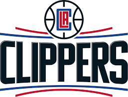

Los Angeles Clippers (en español: Clípers de Los Ángeles) es un equipo de baloncesto de la NBA con sede en Los Ángeles, California.
La temporada 2013-14, fue una de las mejores temporadas para Clippers, llegando por tercera vez en su historia a Semifinales de Conferencia (segunda en tres años). La temporada regular finalizaron con un balance positivo de 57-25, para ser primeros de su división y terceros del Oeste, solo por detrás de los campeones Spurs, y de Thunder. El juego del equipo angelino se basó, de nuevo, en su base Chris Paul, y en su dominio del poste bajo con la pareja formada por Blake Griffin y DeAndre Jordan. Con un Griffin, desarrollando una de sus mejores temporadas en la NBA y Jordan, que fue el líder de la líga en rebotes y en porcentaje de tiros de campo, por segundo año consecutivo. Ya en PlayOffs se deshicieron en primera ronda de los Golden State Warriors de Stephen Curry (4-3), pero salieron derrotados en semifinales de conferencia contra Oklahoma Thunder de Kevin Durant y Russell Westbrook (2-4).
Fundado en 1970, juegan en la División Pacífico de la Conferencia Oeste y disputan sus partidos de casa en el Staples Center, al igual que Los Angeles Lakers. El 8 de abril de 2013, tras batir a Los Angeles Lakers por 109-95 consiguen su primer título de división de la NBA.1 La consecuencia de esos resultados ha sido, entre otras cosas, los tres cambios de ciudad que ha sufrido el equipo desde su fundación, pasando por Buffalo, San Diego y actualmente Los Ángeles.
 Indice
Indice